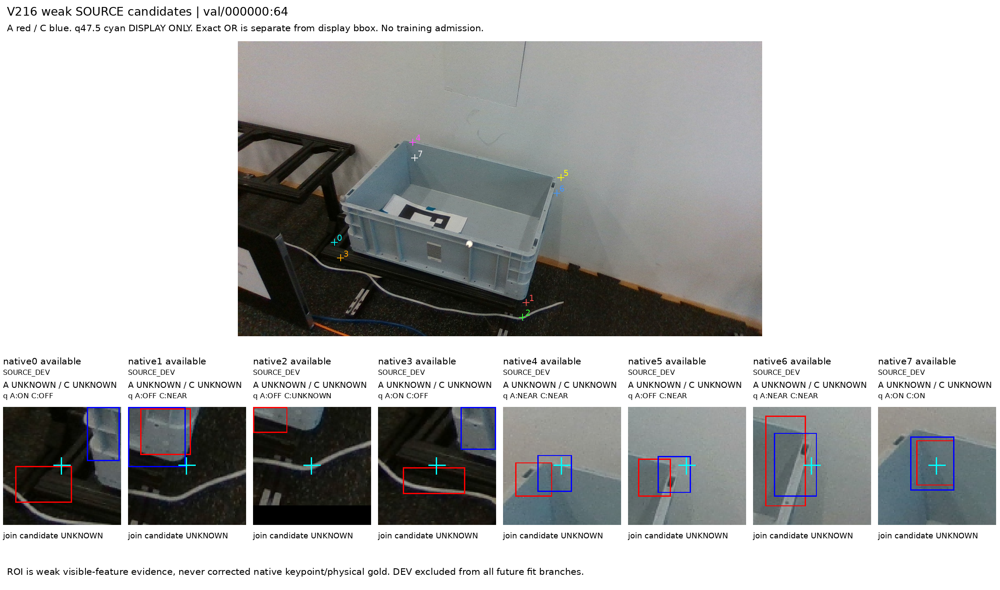
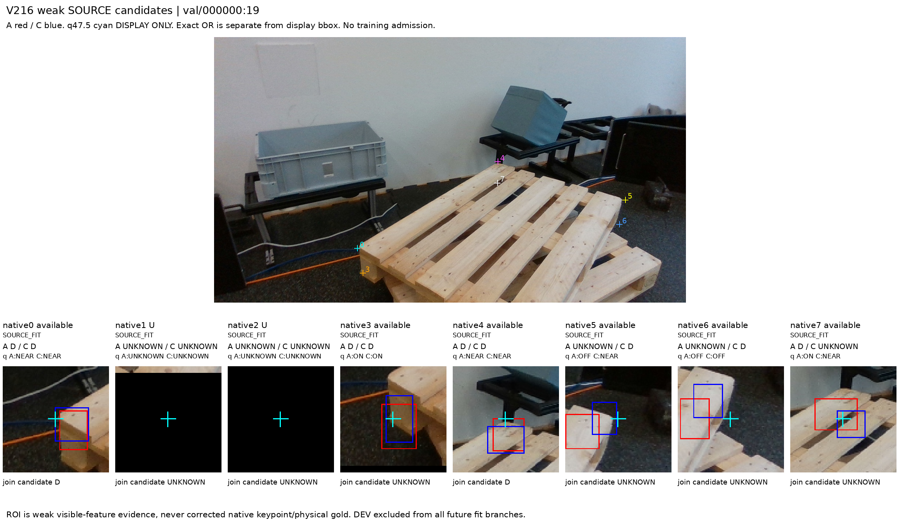
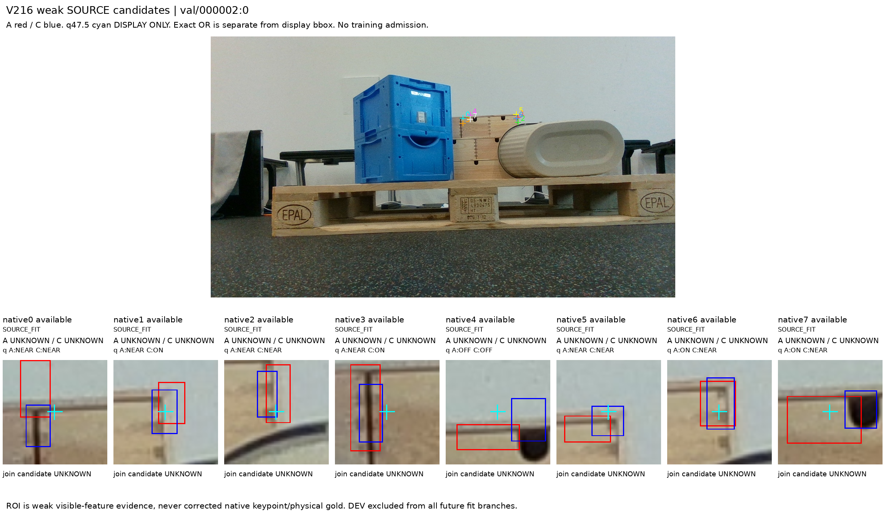
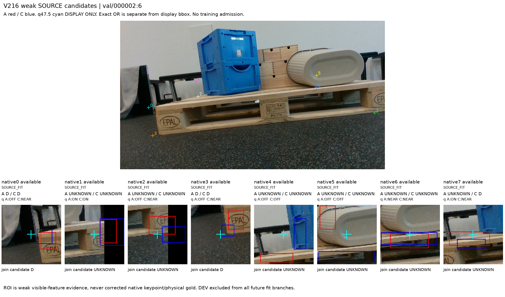
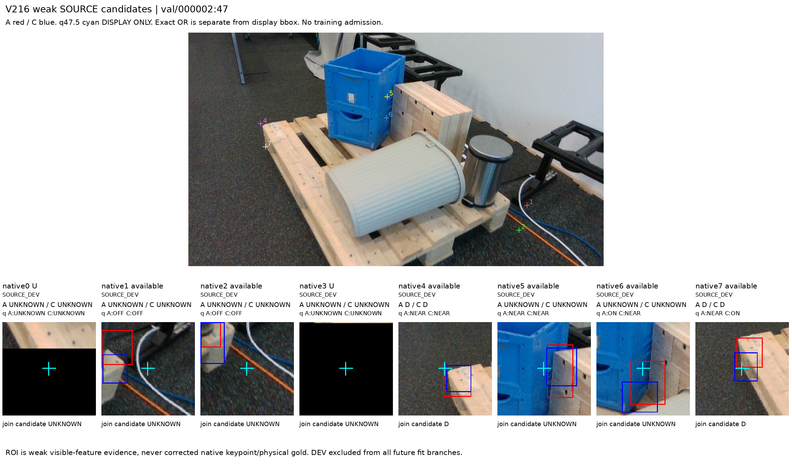
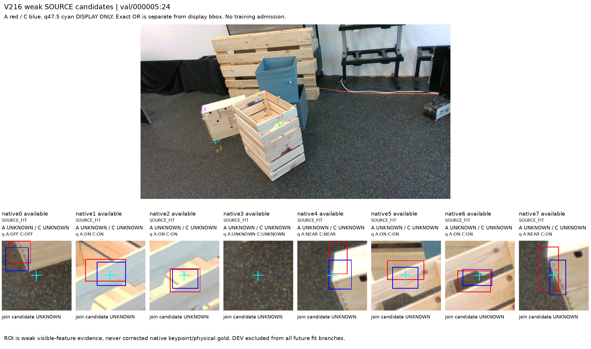
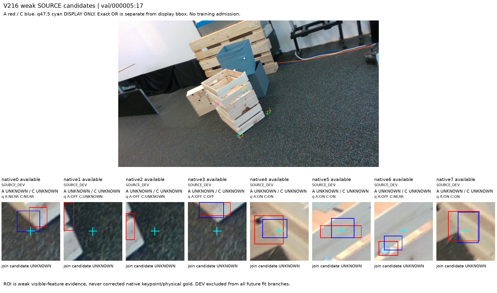
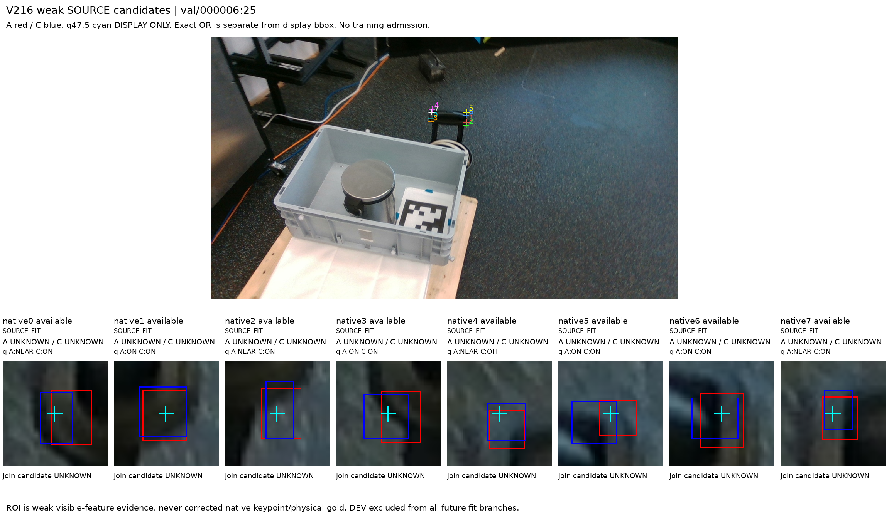
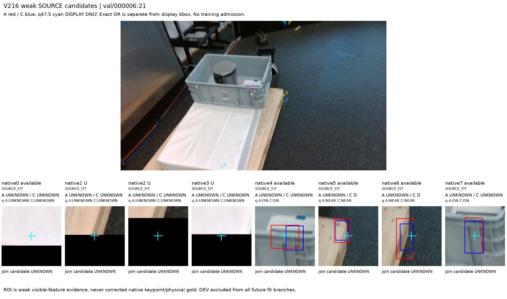

고정 SOURCE TRAIN12프레임/native96의 두 독립 봉인 약관찰을 원ID/qL/U11 그대로 조인했다. 아래 D/E/SELF와 witness 수는 원관찰/기계적 합의후보이며 모델 성능이나 최종 semantic admission이 아니다. 같은 부위·query addressability의 root 검토는 pending이고 학습 admission은 false다.
원U11 / SOURCE_FIT64 / SOURCE_DEV32. Root semantic review pending; no training admission.
보고서 · JSON · 축별 count CSV · 전체12 gallery
| cohort | reader/raw후보 | D/E/SELF/UNKNOWN | ON/NEAR/OFF/UNKNOWN |
|---|---|---|---|
| ALL | A | 14 / 0 / 0 / 82 | 33 / 28 / 22 / 13 |
| ALL | C | 17 / 0 / 0 / 79 | 33 / 31 / 15 / 17 |
| ALL | JOIN_RAW_CANDIDATE | 11 / 0 / 0 / 85 | 24 / 17 / 11 / 44 |
| SOURCE_FIT | A | 12 / 0 / 0 / 52 | 22 / 19 / 12 / 11 |
| SOURCE_FIT | C | 15 / 0 / 0 / 49 | 22 / 21 / 10 / 11 |
| SOURCE_FIT | JOIN_RAW_CANDIDATE | 9 / 0 / 0 / 55 | 16 / 11 / 8 / 29 |
| SOURCE_DEV | A | 2 / 0 / 0 / 30 | 11 / 9 / 10 / 2 |
| SOURCE_DEV | C | 2 / 0 / 0 / 30 | 11 / 10 / 5 / 6 |
| SOURCE_DEV | JOIN_RAW_CANDIDATE | 2 / 0 / 0 / 30 | 8 / 6 / 3 / 15 |











